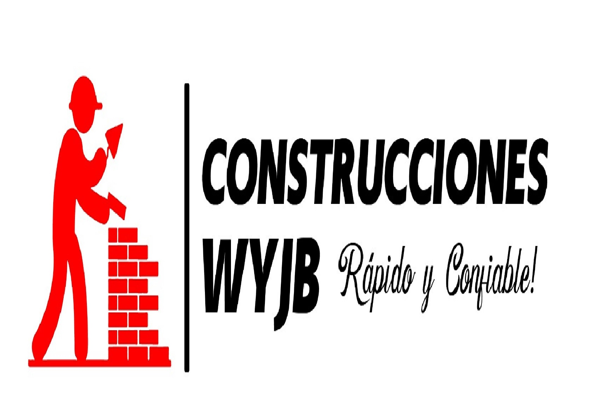

Combo del Ayer FC

Más que un equipo, una familia!
Así marcha el combo!
LIGA DE FUTBOL AFICONADO 2024 ASCENSO


TORNEO COPA LA ROCA 2024


SOBRE EL COMBO DEL AYER
El Combo Del Ayer Fútbol Club, es un proyecto deportivo que nació desde el año 1989 cuando un grupo de jóvenes amigos de los barrios Bello Horizonte y Sindical en la ciudad de Cali, formaron un equipo de microfútbol, con el nombre de Bello Sindi FC, incursionaron en competiciones de microfútbol en diferentes torneos de la comuna 12, destacándose como el primer campeón infantil en el barrio Sindical, el campeón en el tornero de La Tortuga y el sub campeón del torneo Cien Palos. Incursionó como equipo de futbol en el torneo abierto de Comfamiliar Pance, en donde a pesar de no lograr una gran figuración, forjó las bases de lo posteriormente se consolidaría como proyecto deportivo Combo del Ayer Fútbol Club, bajo el liderazgo constante de Jhon Jairo Lourido, a partir de allí se ha trazado un camino de competencias en los diferentes torneos de la ciudad de Cali como Copa La Roca, Torneo abierto Comfenalco, Copa Trinche Rivalo y Liga de Futbol Aficionado LFA, de la cual se cornó CAMPEON de la catagoría C, logranndo el ascender a la siguiente categoría "Ascenso LFA", poniendose ad portas de lograr llegar a la máxima categoría para equipos de futbol aficionado en la ciudad de Cali
